Ruby Framework
for Event Driven Architecture
$ whoami --code
- Software Engineer / Architect
- Karafka creator
- OSS contributor (~12 years with Ruby) 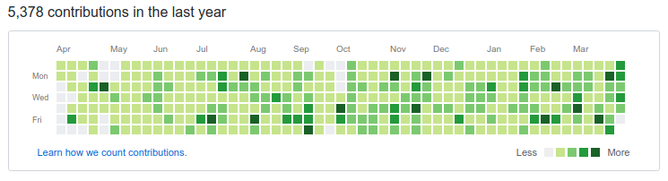
$ whoami --work

Castle detects and mitigates account takeovers in web and mobile apps
$ whoami --travel
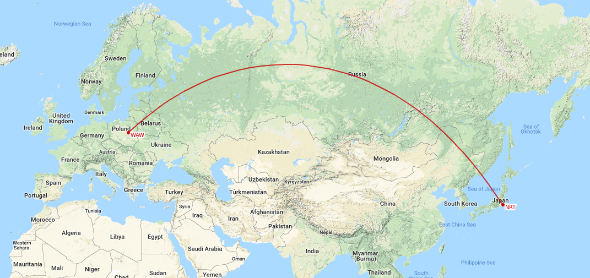8631 km / 24h
Kraków Ruby Users Group organizer
- One of the biggest Ruby communities in Europe
- Over 1200 members
- 60-150 attendees per event
- One meeting per month with 2-3 tech talks
- 17 sponsors
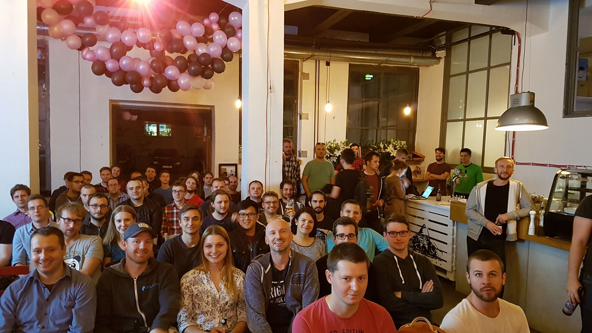
$ whoami --japan
- 1st time at RubyKaigi
- 3rd time in Japan
- Kyokushin Karate practitioner
- Fullmetal Alchemist / 鋼の錬金術師 fan
$ whoami --japan
$ whoami --waifu
$ whoami --contact
github: github.com/mensfeld
www: mensfeld.pl
twitter: @maciejmensfeld
e-mail: maciej@mensfeld.pl
Talk to me about:
Karafka, Kafka, Ruby, Poland, System Architecture, High throughput data processing,
dry-rb, Trailblazer, TCP, Ruby on Rails or anything else TBH :)
Please notify me if...
- I speak 2 fast
- I should repeat anything
- I should explain something better
- You have any questions
What do I hope to leave you with
We're shifting from transactional to evented world. This session should help you understand this change and should provide a gentle intro to stateful distributed systems such as Apache Kafka and how they can be used with Karafka in Ruby based applications.Agenda
- Definitions and basics
- What is Kafka?
- Kafka + Ruby
- What is Karafka?
- Streams and batches mindshift
- Karafka use cases
Definitions
Event-driven architecture (EDA), is a software architecture pattern promoting the production, detection, consumption of, and reaction to events.Image source: Wiki
In object-oriented and functional programming, an immutable object (unchangeable object) is an object whose state cannot be modified after it is created.Image source: Wiki
Domain-driven design is an approach to developing software for complex needs by deeply connecting the implementation to an evolving model of the core business concepts.Image source: DDD Community
Instead of focussing on current state, you focus on the changes that have occurred over time. It is the practice of modelling your system as a sequence of events.Image source: Dev.to
The Saga pattern describes how to solve business transactions (...) in distributed systems. The basic idea is to break the overall transaction into multiple steps. (...) the overall consistency is taken care of by the Saga.
Event-driven shopping cart
| Event type | Params |
|---|---|
| Item added | { cart_id: 1, item: 'Book about Erlang' } |
| Item added | { cart_id: 1, item: 'Book about Ruby' } |
| Item removed | { cart_id: 1, item: 'Book about Ruby' } |
Event-driver shopping cart materialized
| Item | Quantity |
|---|---|
| Book about Erlang | 1 |
| Book about Ruby | 2 |
More about that in Antons talk today @ 16:40
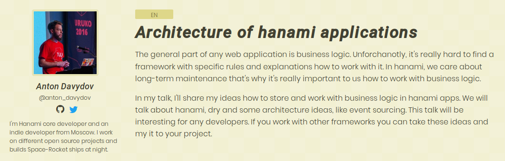Benefits and drawbacks of EDA
This is the way world works.
But most of the time this is not how we model our software.
Instead we maintain the current "snapshot" of our reality dumping the actual state changes.
Data is the new oil
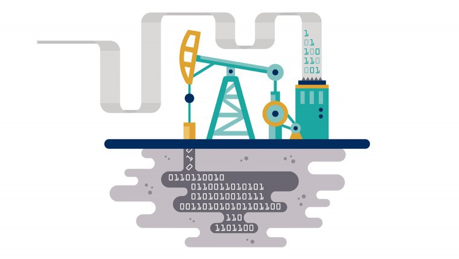
Image source: Joel Semeniuk articleYou may not yet be aware of future use-cases of the data you now possess.
Having this type of data allows you to do many things
- How often users add things together with other things but decide not to buy all of them?
- How long does it take for a user to make an order from the moment first item was added?
- How long does it take for a user to make an order from the moment last item was added?
Minimal set of in-between dependencies
One way relationship
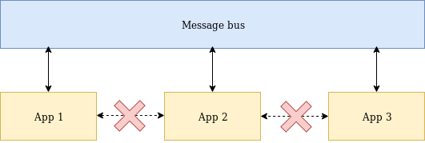Performance
Great for performance, availability and scaling
- Scalability of processing
- Scalability of design
- Scalability of change
Design and architecture quality
Downsides
Asynchronicity

Eventual consistency
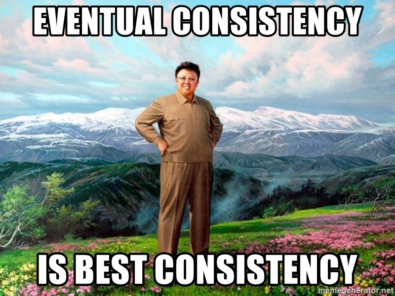Data corrections need events
(As long as not isolated behind an aggregation root)
Can be an over-engineering for simple CRUD systems
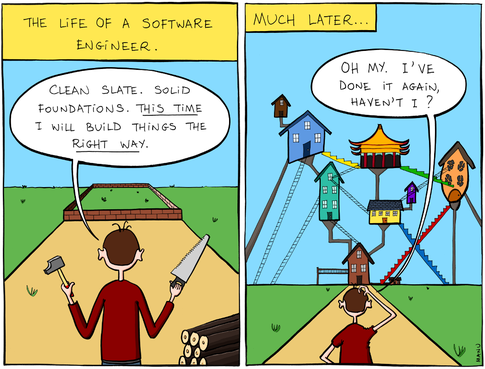
Image source: Twitter
What is Kafka?
It is a distributed streaming platform
It is a high-throughput distributed messaging system
What is Kafka?
- Kafka is designed to allow a single cluster to serve as the central data backbone for a large organization
- It can be elastically and transparently expanded without downtime
- It provides broadcasting to many applications
- Allows to build systems that are event based

What is Slack?
Slack is a messaging app for teams
What is Kafka?
Kafka is a messaging app for apps
Who uses Kafka?
- Castle
- Netflix
- Square
- Spotify
- Uber
- Tumblr
- Cisco
- Foursquare
- Shopify
- Oracle
- Urban Airship
- OVH
- And many more...
How Kafka works?

Topic anatomy
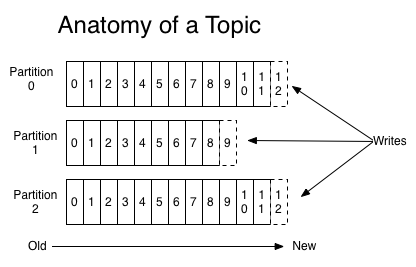Consumer groups
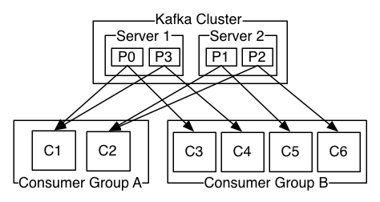Consumer group is a set of consumers sharing a common group identifier.
Messages are immutable
Byte arrays
- String
- JSON
- Apache AVRO
- Or anything else
Partition anatomy
Great for scalability
- The more partitions you have, the more throughput you get
- Each partition must fit on a single server
Partition anatomy
Great for ordering
- Kafka guarantees message order within the same partition
- Strong ordering can be achieved by using partition keys
Partition anatomy
Great for ordering
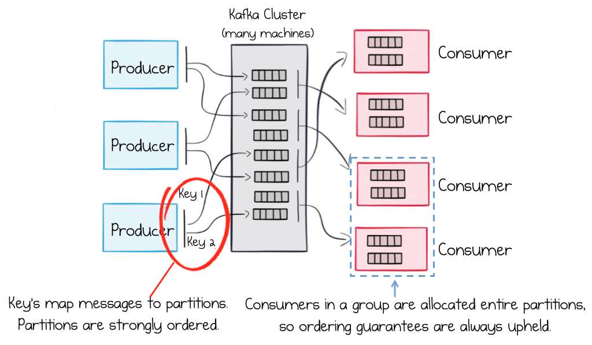
Img source: Apache Kafka for service architectureLoad balanced services
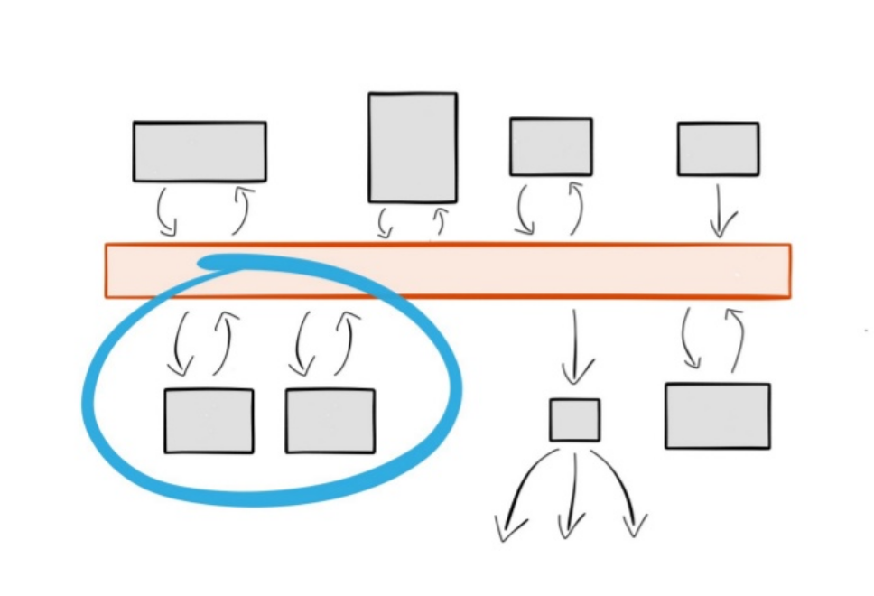
Img source: Ben Stopford's talkFault tolerant services
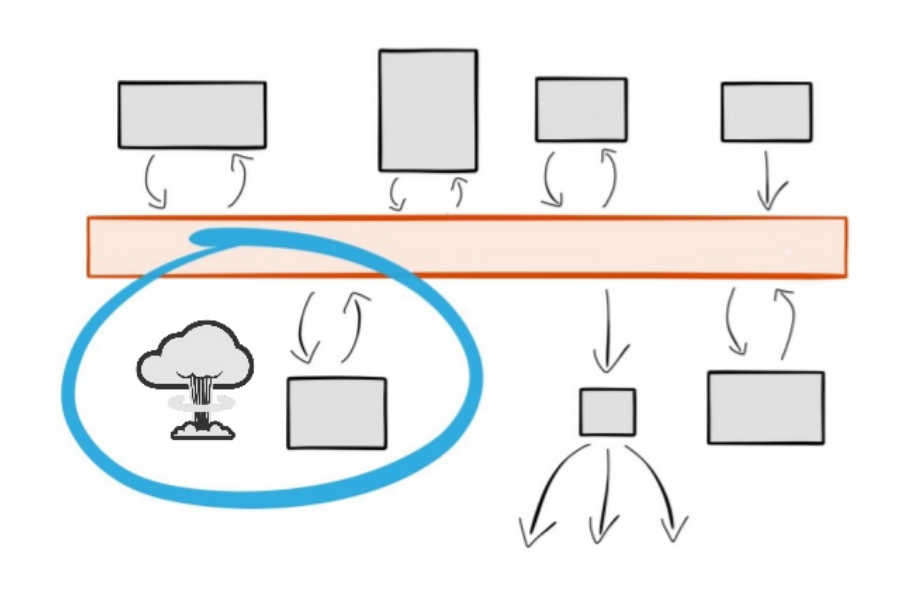
If an instance of a service dies, data is redirected and ordering guarantees are maintained.
Img source: Ben Stopford's talkRewind and replay services
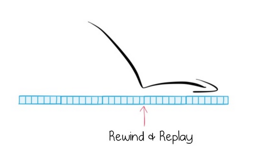
Img source: Ben Stopford's talk
+

Kafka + Ruby
Kafka + Ruby
jruby-kafka
- A wrapper around the official Kafka Java client
- Won't work with cRuby based apps
- Requires reading Java docs ;(
Kafka + Ruby
poseidon
- Not maintained
- Still working if used with 0.8 Kafka API
- Does not support consumer groups
- Still used by some companies
Kafka + Ruby
ruby-kafka
- Maintained
- 0.9+ API support
- Sync and async producers
- Powered by Zendesk
- Default Karafka driver
A story of getting things done
What is Karafka?
- It is a framework used to simplify Apache Kafka based Ruby applications development.
- Karafka provides a seamless and stable core for consuming and processing data, without forcing you to focus on things that are not your business domain.
Why we've developed Karafka?
We've needed a tool that would allow us to:
- build applications faster
- process faster
- handle events and messages from many sources and process them the same way
Why we've developed Karafka?
Because:
- threads
- signals
- drivers
- parsing
- connection management
- load balancing
- connection failures / reconnections
aren't business logic
Why even bother with messaging when there is HTTP and REST?
- HTTP does not provide broadcasting
- Often many independent actions needs to be triggered based on a single event
- Maintaining internal API clients is a no-no
- Much harder batch data reception (must be implemented on the client side)
Why even bother with messaging when there is HTTP and REST?
- With a message broker you can replace microservices transparently
- You can obtain better microservices isolation
- You can create new microservices that use multiple different events from many sources
It really is about messaging
Real life is asynchronous
So, why our apps aren't?
Karafka uses goods that are already well known and performant:
- ruby-kafka for talking with Kafka
- dry-monitor for instrumentation
- dry-configurable for settings management
- dry-validation for checking the settings consistency
- concurrent ruby for all the multi-thread internal components
- A lot of PORO for all the other things
Karafka framework components
Karafka core is combined from few logical parts:
- Router for describing consumer groups and their details
- Consumers for consuming (processing) messages
- Responders for sending
- CLI for management
Karafka framework components
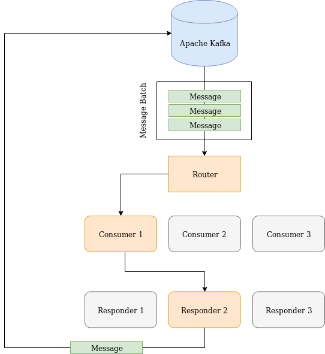How to install it?
# Gemfile
source 'https://rubygems.org'
gem 'karafka'
bundle install
bundle exec karafka install
Update karafka.rb with your configuration settings and run:
bundle exec karafka server
All the configutation options are described here:
github.com/karafka/karafka
Karafka conventions and features
Everything is being validated to ensure you won't do anything stupid
class KarafkaApp < Karafka::App
setup do |config|
config.client_id = 'my_application'
config.backend = :inline
config.batch_fetching = true
config.batch_consuming = true
config.kafka.seed_brokers = %w[kafka://127.0.0.1:9092]
config.shutdown_timeout = -1
end
end
Default configs are quite good for getting started, so you don't have to worry about that at the beginning.
class KarafkaApp < Karafka::App
setup do |config|
config.kafka.seed_brokers = %w[kafka://127.0.0.1:9092]
config.client_id = 'example_app'
end
end
Routing engine
It provides an interface to describe how messages from all the topics should be fetched and how they should be consumed.
KarafkaApp.consumer_groups.draw do
consumer_group :group_name do
topic(:videos_created) { consumer VideosConsumer }
topic :binary_video_details do
consumer BinaryConsumer
parser Parsers::BinaryToJson
responder BinaryVideoProcessingResponder
batch_consuming true
end
end
end
Not much needed to be done, if you work with JSON data:
KarafkaApp.consumer_groups.draw do
consumer_group :commit_builds do
topic(:builds_created) { consumer CreateBuildsConsumer }
topic(:builds_done) { consumer UpdateBuildConsumer }
topic(:builds_expired) { consumer ExpireBuildConsumer }
end
end
Karafka consumers are simple
All you need is a #consume method that will be executed when new messages arrive:
class CreateVideosConsumer < Karafka::BaseConsumer
def consume
params_batch.each do |params|
respond_with Video.create!(params[:video])
end
end
end
Responders help preventing bugs when you design a receive-respond applications that handle work on multiple incoming and outgoing topics
class ExampleResponder < ApplicationResponder
topic :users_notified
def respond(user)
respond_to :users_notified, user
end
end
bundle exec karafka [COMMAND]
karafka console
karafka flow
karafka help [COMMAND]
karafka info
karafka install
karafka server
karafka flow CLI command
commit_builds_imported =>
- commit_builds_scheduled: (always, one or more)
commit_builds_processed =>
- commit_builds_copied: (always, one or more)
sources_received =>
- commit_builds_imported: (always, exactly once)
repositories_created => (nothing)
repositories_deleted => (nothing)
repositories_updated => (nothing)
repositories_tiers_updated => (nothing)
Karafka performance
- Single process can handle around 55 000 messages per second
- Less than 1 ms to send a message with the slowest (secure) mode (Kafka request.required.acks -1)
- Less than 1/10 of a ms to send a message with the 0 mode (Kafka request.required.acks 0)
Fetching and consuming
During a message or a batch lifecycle within Karafka framework, there are two crucial moments:
- Fetching - process of getting the Kafka data to Karafka Ruby process
- Consuming - process of applying the business logic to the fetched messages
Fetching modes
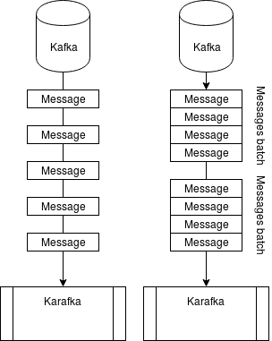Consuming modes
Depending on your application and/or consumer group settings, Karafka's consumer can consume messages in two modes:
- Batch messages consuming
- Single message consuming
Batch consuming
class TweetsConsumer < Karafka::BaseConsumer
def consume
tweets = params_batch
.map { |params| params.fetch('video') }
.map { |params| Tweets::New.call(params)['model'] }
Tweets::Import.call tweets
end
end
Single message consuming
class TweetsConsumer < Karafka::BaseConsumer
def consume
Tweets::Create.call(params.fetch('video'))
end
end
Lazy params evaluation
Messages inside a batch are lazy parsed upon the first usage
IGNORE_LIMIT = 60 # 1 minute
def consume
params_batch.to_a.each do |unparsed_event|
# Ignore messages that were created long ago
limit = Time.now - IGNORE_LIMIT
next if unparsed_event.create_time < limit
EventReactor.call(unparsed_event.parse!)
end
end
Lazy params evaluation
- Great for "now or never" operations
- Great for time sensitive event based operations
- Great for filtering noise based on Kafka messages metadata
- Great for ignoring old data after services restarts
Persistent consumers
BUFFER_SIZE = 1000
def consume
buffer << params_batch.map { |param| param.fetch('event') }
if buffer.size >= BUFFER_SIZE
data = buffer.shift(BUFFER_SIZE)
Event.import_batch(data)
end
end
def buffer
@buffer ||= []
end
Persistent consumers
- Consumers are persistent by default
- This behavior can be changed to make instances handle only a single batch or a message
- Consumer instance always handles messages only from a single partition of a single topic
- Great for implementing buffering and batch data flushing
- Great for sagas realization
Multi batch transactions
Imagine a transaction that lasts across thousands of requests
Transaction for which you need no new persistence layer until you get all the data you need
Manual offset management
buffer = []
customer_id = 1
params_batch.each do |params|
next unless params['customer_id'] == 1
case params.fetch('type')
when 'added_to_cart'
buffer << params
when 'completed_purchase'
Events.import(buffer)
consumer.mark_message_as_processed(params)
buffer = []
end
end
Monitoring and logging
Karafka uses dry-monitor as an instrumentation layer to which you can easily hook up with your own listeners. You can use it to develop your own monitoring and logging systems
Monitoring and logging
Subscribe with a block
key = 'params.params.parse.error'
KarafkaApp.monitor.subscribe key do |event|
puts "Oh no! An error: #{event[:error]}"
end
Monitoring and logging
Subscribe with a class/module
if KarafkaApp.env.production?
KarafkaApp.monitor.subscribe(AirbrakeListener)
KarafkaApp.monitor.subscribe(DataDogListener)
KarafkaApp.monitor.subscribe(LogstashListener)
else
KarafkaApp.monitor.subscribe(StdoutListener)
end
Deployment
You can deploy and run Karafka on various platforms using:


Seamless integration with Kafka SaaS providers thanks to topic mappers
Some Kafka cloud providers require topics to be namespaced with a username. This approach is understandable, but at the same time, makes your applications less provider agnostic.
Seamless integration with Kafka SaaS providers thanks to topic mappers
To target that issue, you can create your own topic mapper that will sanitize incoming/outgoing topic names, so your logic won't be bound to those specific versions of topic names.
Seamless integration with Kafka SaaS providers thanks to topic mappers
class KarafkaTopicMapper
def initialize(prefix)
@prefix = prefix
end
def incoming(topic)
topic.to_s.gsub("#{@prefix}.", '')
end
def outgoing(topic)
"#{@prefix}.#{topic}"
end
end
Seamless integration with Kafka SaaS providers thanks to topic mappers
mapper = KarafkaTopicMapper.new('maciej')
mapper.incoming('maciej.my_super_topic') #=> 'my_super_topic'
mapper.outgoing('my_other_topic') #=> 'maciej.my_other_topic'
Integrating with Ruby on Rails and other web-frameworks
- It's best to start by sending messages
- Karafka has a library for that called WaterDrop
# Rails create action
def create
@user = User.create(user_params)
if @user.valid?
WaterDrop::AsyncProducer.call(@user, topic: 'users')
end
respond_with @user
end
Integrating with Ruby on Rails and other web-frameworks
ENV['RAILS_ENV'] ||= 'development'
ENV['KARAFKA_ENV'] = ENV['RAILS_ENV']
require ::File.expand_path('../config/environment', __FILE__)
Rails.application.eager_load!
Karafka as a component of an alt-Rails stack
- Kafka and Karafka can be a great alternative to callbacks and other alternative notifiers like (broadcasting instead of callbacks)
- It can acts as a flow normalization layer for high throughput tasks
- Due to it's nature it can easily acts as an auto-scaling layer for handling incoming data spikes
Karafka as a component of an alt-Rails stack
Because Karafka acts a message transportation layer, it works really great with other modern Ruby solutions including:
- Reform
- Trailblazer
- ROM.rb
- Dry ecosystem
Karafka as a component of an alt-Rails stack
Example integration with Trailblazer + Reform
class CommitBuildsCopyController < KarafkaController
def perform
CommitBuilds::Copy.call(
params_batch.map { |params| params.fetch('value') }
)
end
end
Streams and batches mindshift
Streams and batches mindshift
The biggest change that needs to happen is not in the code-base nor in the architecture but in the people.
Simple example of an "instance oriented" mindset
Event triggered webhooks
Problem: based on some internal events we need to set HTTP events to our customers
1:1 relationship
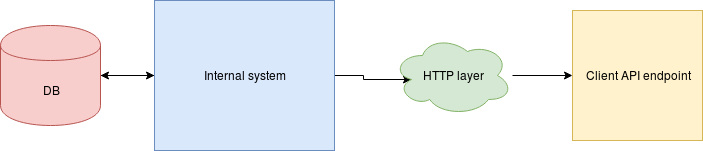More events, more requests
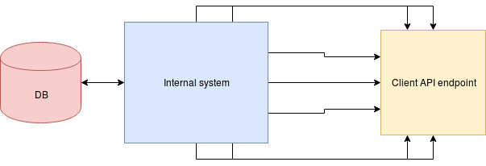More requests, more problems
- Client server overload
- Client server downtimes
- Linux socket connections limit
- Network problems
- Retries handling
Mindset switch
What if we could:
- Make sure that even if we don't do it yet, our customers are ready for it
- Send a single event details when no traffic
- Increase number of events delivered without increasing number of requests
- Autoscale
Mindset switch
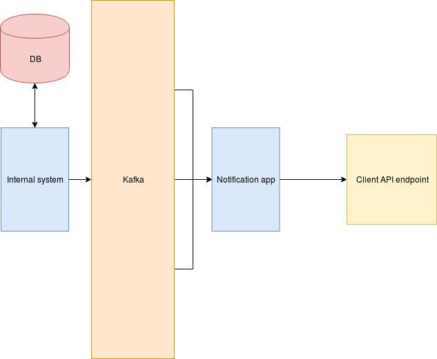
How we use all of it at Castle?
Castle detects and mitigates account takeovers in web and mobile apps
Account compromise - a growing danger
In the fall of 2017, Yahoo announced that all their users (3 billion accounts) were hacked. Equifax announced that credit information and personal information for 143 million consumers was exposed. Dropbox announced in 2016 that 68 million user accounts were compromised.
Password hacking is easy in 2018
- sentry-mba.com, 2captcha.com, pastebin.com, ...
- 73% passwords are used on multiple sites
- 3.1B credentials leaked only in 2016
Credentials can be stolen, but behavior can't be faked
Our approach to compromise prevention is simple: fully understand the behavior patterns of your user base at every level, and use that understanding to stop any unauthorized entities accessing accounts in real time.
Credentials can be stolen, but behavior can't be faked
While hackers might have an easy time obtaining credentials to log into a user account, mimicking all behaviors of a stolen user account at all points in an application is virtually impossible, for even the most experienced hacker.
What do we track?
Device level signals:
IP, browser, user agent, language, device type, screen resolution, battery level, plugins
UI interactions:
Mouse movements, keystrokes, touch interactions, site navigation, user details and attributes
We use all these signals to create a holistic devices fingerprints in real time, every time the user interacts with the application.
The fingerprints serve as building blocks for our behavior models, and anytime there is a single change to the fingerprint our dynamic risk scores are updated accordingly in real time via asynchronous call.
- More than 100 mln events per day
- Over 25 mln active users per day
- Over 50mln active users overall
- 2.5 mln failed logins daily
Kafka is a central data backbone for us with Karafka for the consumption
- Every single information go through it
- Multiple applicatons consume the same data but output different results in a stream manner
- Data streams are used to materialize data for the UI app
- Real-time scoring and predictions
- Real time data backups and archiving
It's all being consumed using Ruby <3
- Applications don't care about origins of an events / messages
- Downtimes aren't a problem as applications catch-up to the current system state
- A lot of async independent work that can happen within isolated services
- Batches allow us to optimize DBs operations and allow for a lot of in-memory computation
Karafka roadmap
We're currently working on a 1.3 release:
- Performance and memory usage improvements
- dry-container for dependency management
- No global state for the server process
- Better handling of timeouts and heartbeats
- Better instrumentation
- Support for custom headers for producing and consuming
READ MORE
THE END
- www: github.com/karafka
- email: maciej@mensfeld.pl
- twitter: @maciejmensfeld